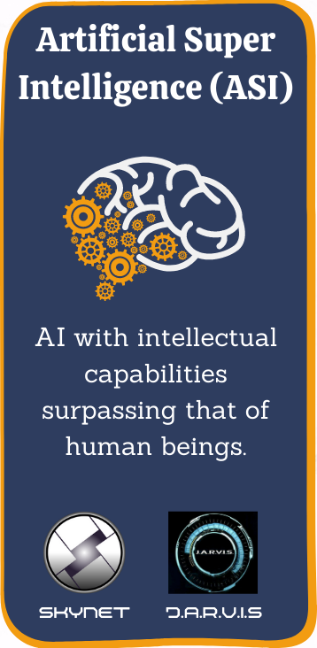

Artificial Intelligence (AI) refers to the development of computer systems capable of performing tasks that typically require human intelligence. It involves creating algorithms and models that enable machines to learn from data, adapt to new inputs, and perform tasks with varying degrees of autonomy. AI has become increasingly significant in today's world due to its potential to revolutionize various industries, including healthcare, finance, transportation, and entertainment. AI systems can analyze large amounts of data, detect patterns, make predictions, and automate complex processes, leading to improved efficiency, accuracy, and decision-making.
Artificial Intelligence or AI is the combination of algorithms used for the purpose of creating intelligent machines that have the same skills as a human being. It uses machine learning and deep learning techniques to build complex systems.
.png) |
.png) |
 |
|---|---|---|
| Artificial Narrow Intelligence (ANI) | Artificial General Intelligence (AGI) | Artificial Super Intelligence (ASI) |
| Refers to systems designed to perform specific tasks, such as image recognition, natural language processing, or playing chess. | Refers to possess human-level intelligence and have the ability to perform any intellectual task that a human being can do. | Refers to it having beyond human capabilities and surpasses the most gifted human minds in virtually every aspect. |
Artificial Intelligence (AI) presents numerous challenges that need to be addressed for its successful implementation and continued development. One significant challenge is the lack of interpretability and transparency in AI algorithms. Complex AI models often produce results without clear explanations, making it difficult to understand the underlying decision-making process. This opacity raises concerns about bias, fairness, and accountability, as AI systems can inadvertently perpetuate existing societal biases or make unjust decisions. Another challenge is the need for vast amounts of high-quality data to train AI models effectively. Obtaining such data can be costly, time-consuming, and may raise privacy concerns. Additionally, AI faces the challenge of scalability, as the performance of many AI systems deteriorates when applied to new domains or tasks outside their original training scope. Adapting AI models to handle novel situations and generalize their knowledge remains a significant hurdle. Lastly, ethical considerations surrounding AI are crucial challenges. Issues such as job displacement, the impact of AI on human decision-making, and the potential misuse of AI technology raise important ethical questions that require thoughtful deliberation and regulation. Addressing these challenges is fundamental to ensuring the responsible development and deployment of AI systems in our society.
Artificial Intelligence (AI) presents a wide range of opportunities that can revolutionize various aspects of our lives. One significant opportunity lies in the field of healthcare, where AI has the potential to enhance diagnostics, drug discovery, and personalized medicine. AI algorithms can analyze vast amounts of patient data, identify patterns, and assist in early detection and accurate diagnosis of diseases. In the realm of transportation, AI can improve efficiency, safety, and sustainability. Self-driving vehicles powered by AI can reduce accidents and traffic congestion while optimizing fuel consumption. AI also offers opportunities in the realm of customer service and personalization. Through natural language processing and machine learning, AI-powered chatbots and virtual assistants can provide personalized recommendations, answer queries, and streamline customer interactions. Furthermore, AI has the potential to revolutionize industries such as finance, manufacturing, and agriculture by automating processes, optimizing resource allocation, and improving productivity. In the field of education, AI can facilitate personalized learning experiences, adapt teaching methods to individual students, and provide real-time feedback. Ultimately AI can improve efficiency, decision-making, and quality of life for individuals and society as a whole.
There is increasing interest in leveraging AI for social good and addressing global challenges, such as healthcare, poverty, climate change, and education. AI applications in areas like precision medicine, disaster response, environmental monitoring, and personalized learning have the potential to make a positive impact on society.